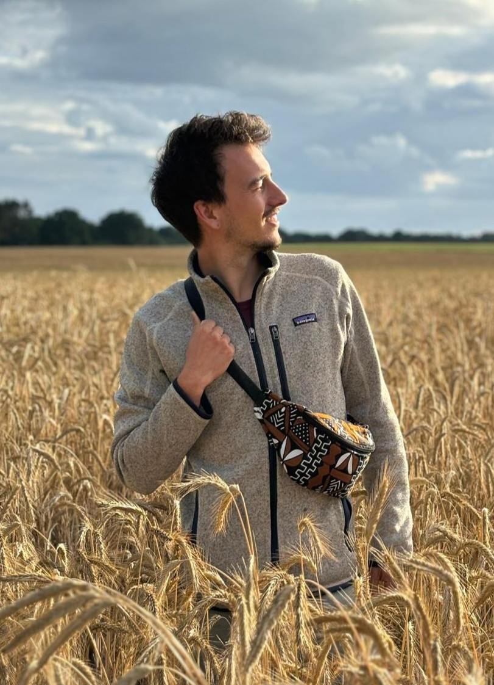
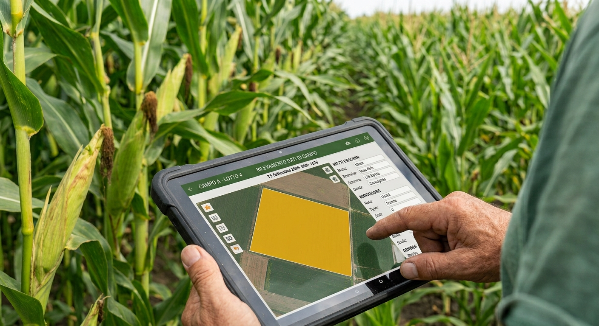

Dietro Ager c'è una persona,
non solo un progetto.
Ricercatore in Agrometeorologia, con anni di esperienza in modellistica idrologica e agronomica applicata alla gestione delle risorse idriche.

Il mio percorso
Mi chiamo Andrea Borgo, e l'agricoltura sostenibile è la mia missione.
Ho studiato ingegneria ambientale al Politecnico di Torino, specializzandomi in cambiamenti climatici. Dopo la laurea, ho trascorso quattro anni in Sardegna, dove ho conseguito un dottorato in agrometeorologia con la Fondazione CMCC. La ricerca mi ha portato a sviluppare modelli idrologici e strumenti per la gestione sostenibile delle risorse idriche, e questo lavoro mi ha messo a contatto con più di 11 enti (Università, Istituti di Ricerca, Agenzie governative, Aziende di consulenza informatica) in Italia, Spagna, Grecia, Tunisia, Giordania e Libano.
In questi anni ho costruito strumenti digitali per il supporto all'irrigazione in tempo reale e per la previsione stagionale e a lungo termine della disponibilità idrica. Ma soprattutto ho parlato con decine e decine di agricoltori nel Mediterraneo. Da loro ho imparato due cose: quanto sia delicata e importante la loro professione, e quanto sia ingiusto che passino il loro tempo a combattere l'imprevedibilità climatica, il carico burocratico e margini sempre più ristretti.
È stato allora che ho visto chiaramente il potenziale: il digitale non dovrebbe aggiungere complessità agli agricoltori, ma sottrarla. Potrà guidarli verso decisioni consapevoli, basate su dati, liberandoli dalle carte.

Perché Ager
Ager nasce da un'osservazione semplice che mi ha seguito per anni: chi lavora la terra passa sempre più tempo a compilare registri e sempre meno a decidere in campo.
Ho visto come la modellistica scientifica diventi veramente utile solo se tradotta in uno strumento reale, che la gente usa ogni giorno, senza corsi di formazione tecnica. Ager porta la stessa qualità di modellistica che ho sviluppato in anni di ricerca direttamente nel quaderno di campagna digitale, eliminando la doppia compilazione, anticipando le condizioni climatiche, e restituendo tempo a chi lo usa.
La missione
Un quaderno di campagna intelligente, semplice e dinamico: uno strumento che guidi l'agricoltore verso decisioni consapevoli e riduca il peso della burocrazia. Questi sono i due obiettivi che guidano ogni scelta di Ager.
Non è uno strumento costruito per l'amore della precisione tecnica, ma per convertire i dati in decisioni concrete che si prendono in campo.
Credo in un'agricoltura che usi il meglio della scienza moderna, senza lasciarsi appesantire da essa. Un'agricoltura dove la tecnologia risparmia tempo reale e offre indicazioni chiare in un mondo più imprevedibile. Dove chi produce il cibo che mangiamo ha finalmente lo spazio mentale per fare bene il suo mestiere.
Competenza scientifica, missione concreta.
Dottorato in Agrometeorologia
Formazione scientifica applicata alla relazione tra clima, suolo e colture.
Modellistica idrologica
Anni di esperienza nella gestione e previsione delle risorse idriche in agricoltura.
Missione concreta
Portare strumenti digitali al servizio di chi lavora la terra ogni giorno.
Vuoi conoscere meglio il progetto?
Scrivimi per parlare di come Ager può inserirsi nella tua azienda agricola.
Parliamone